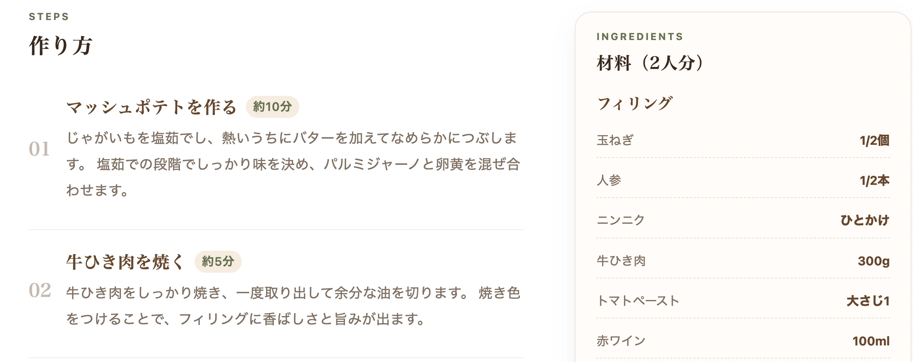
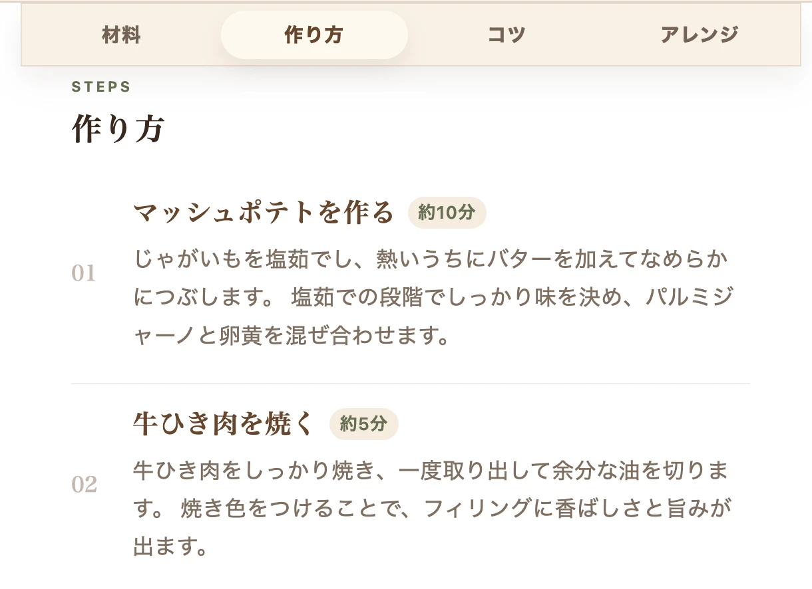
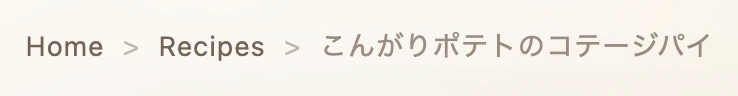

制作背景・制作目的
レシピサイトを日常的に利用する中で、「効率化を重視するあまり、美味しさに関わる重要な工程やコツが省かれていること」や、「デザイン性と調理中の操作性が両立していないこと」に課題を感じていました。
特に、スマホで調理しながら材料を確認する際、画面を何度も上下にスクロールする手間は、ユーザー体験（UX）を損なう大きなストレスとなっていました。
そこで、徹底的に「見ながら作る」という行動に寄り添った、情報の構造化とレイアウトの最適化を目指して本サイトを制作しました。
制作概要
制作目的
料理中の使いやすさと、読みものとしての楽しさを両立した架空のレシピ・コラムサイト。
担当範囲
企画・設計・デザイン・実装・レスポンシブ対応まで一貫して担当。
使用技術
HTML / CSS / JavaScript / Git / GitHub / GitHub Pages
情報設計で意識したこと
PC版の見せ方
レシピ詳細ページでは、左側に作り方、右側に材料・コツ・アレンジを配置しました。 料理中に必要な情報を、視線移動だけで確認しやすい構成にしています。
{kind=link}

スマホ版の情報整理
スマホ版では、材料・作り方・コツ・アレンジをタブで切り替えられるようにしました。 限られた画面でも、必要な情報を探しやすく整理しています。
{kind=link}

サイト内の回遊導線
レシピ一覧・コラム一覧・関連記事・パンくずリストを用意し、 気になるページへ自然に移動できる構成にしました。 単発の記事で終わらない、小さな料理メディアとしての回遊性を意識しています。
{kind=link}

コンテンツ設計で意識したこと
自作料理ベース
サイト内で扱う料理は、実際に自分で作ったものをもとに構成しました。 写真やレシピ内容も、家庭で再現しやすいことを意識しながら整理しています。
家庭向けレシピ設計
専門的な調理法やプロのレシピから得た知識を参考にしつつ、 家庭のキッチンでも作りやすい分量・工程・材料に落とし込むことを意識しました。 単なる転載ではなく、実際に作る場面に合わせて調整しています。
レシピ×コラムの構成
レシピだけでなく、料理や自炊にまつわるコラムページも制作しました。 作り方だけで終わらせず、料理への向き合い方やサイト全体の価値観が伝わるようにしています。
デザインで工夫したこと
落ち着いた雰囲気
ベージュ・ブラウン・オリーブを基調に、落ち着いた料理メディアのような雰囲気を目指しました。 派手さよりも、料理や暮らしの温度感が伝わる配色を意識しています。
トップページ
トップページでは、暗めの料理写真に明朝体のコピーを重ねることで、 「焦らず、焦がさず、ひと手間を。」というサイトコンセプトが最初に伝わるようにしました。
カードと余白の工夫
レシピカードやコラムカードは、写真・カテゴリ・タイトル・説明文・メタ情報の並びを統一しました。 余白を広めに取り、紙面や雑誌のように落ち着いて読める印象になるよう調整しています。
実装で工夫したこと
レスポンシブ対応
メディアクエリを使い、PCでは情報を横並びで確認しやすく、 スマートフォンでは縦方向に読み進めやすいレイアウトへ切り替えました。 画面幅に応じて余白や文字サイズも調整しています。
印刷対応CSS
印刷用CSSを用意し、画面上ではタブで分かれている情報も、 印刷時にはまとめて確認できるようにしました。 スマホ閲覧だけでなく、紙で見ながら料理する場面も想定しています。
カテゴリフィルター
レシピ一覧ページでカテゴリボタンを押すと、該当する料理だけを絞り込んで表示できるようにJavaScriptで実装しました。ページ遷移なしで切り替わるため、見たいレシピをすばやく探せます。
これまでの経験とのつながり
これまでIT実務で培ってきた「要件定義・課題管理・業務改善」の経験を、本プロダクトの設計プロセスにそのまま注入しています。
単に画面を実装するだけでなく、「誰が・どの場面で・どの情報を必要とするか」を徹底的に逆算して設計を行いました。
今後改善したい点
今後は、CSSの整理や画像軽量化を進め、表示速度と保守性をさらに改善したいと考えています。
また、検索機能を強化し、レシピやコラムを増やしながら、 WordPress化によって更新しやすいサイトへ発展させていきたいです。